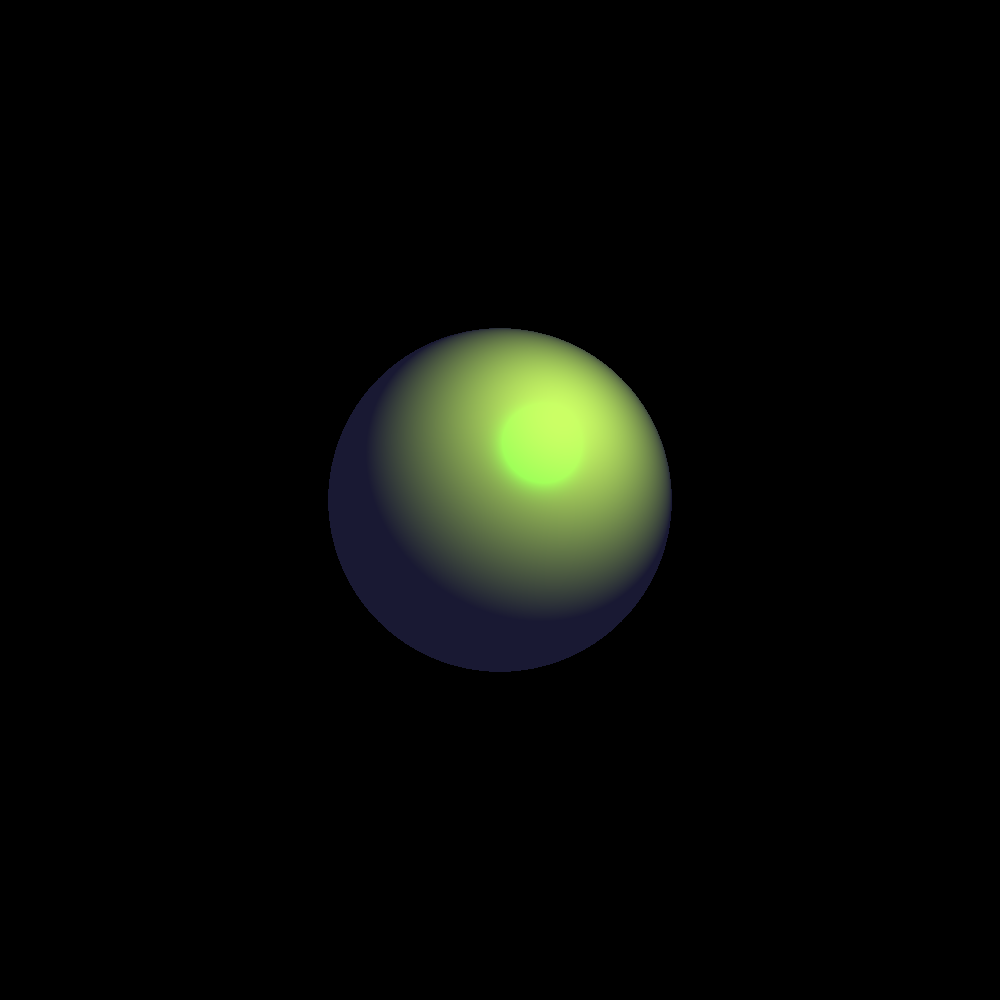
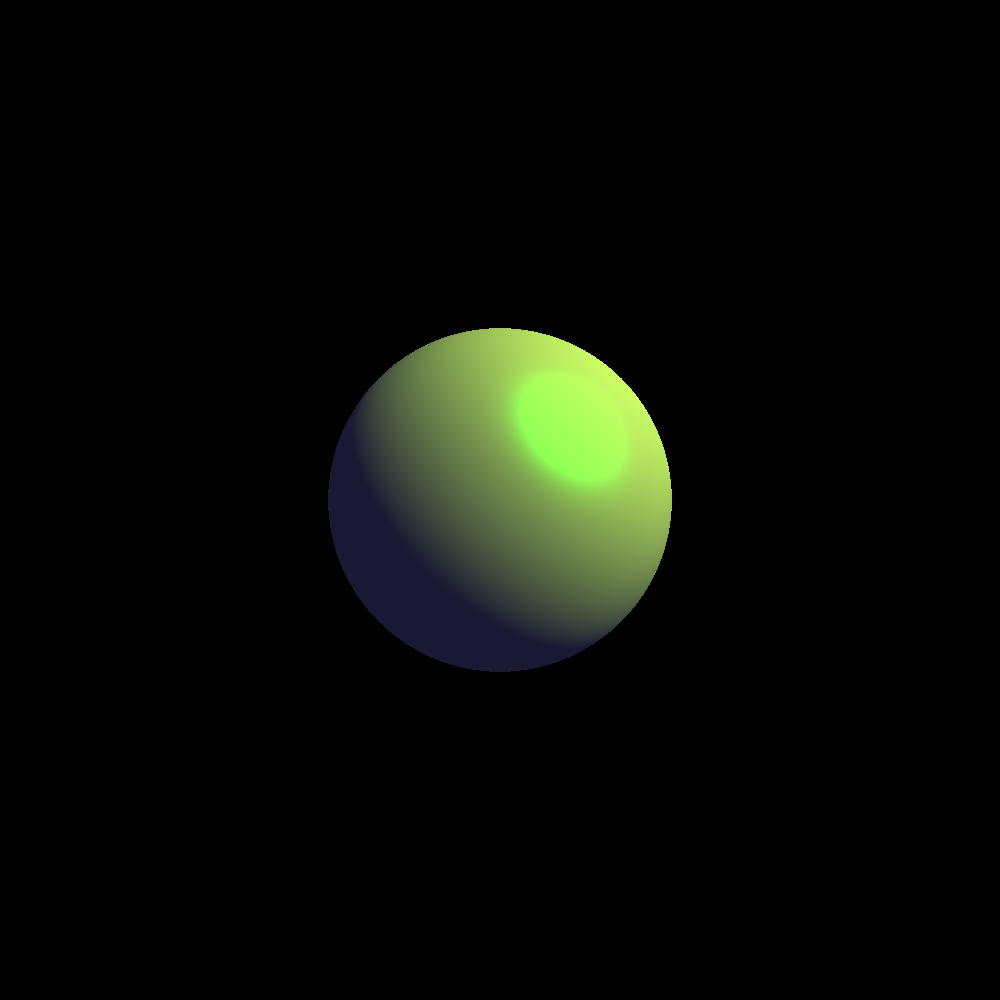
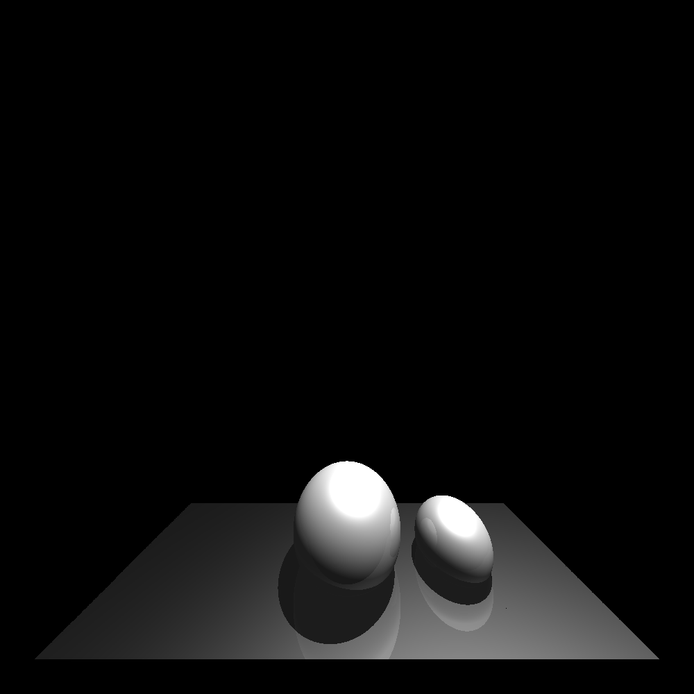
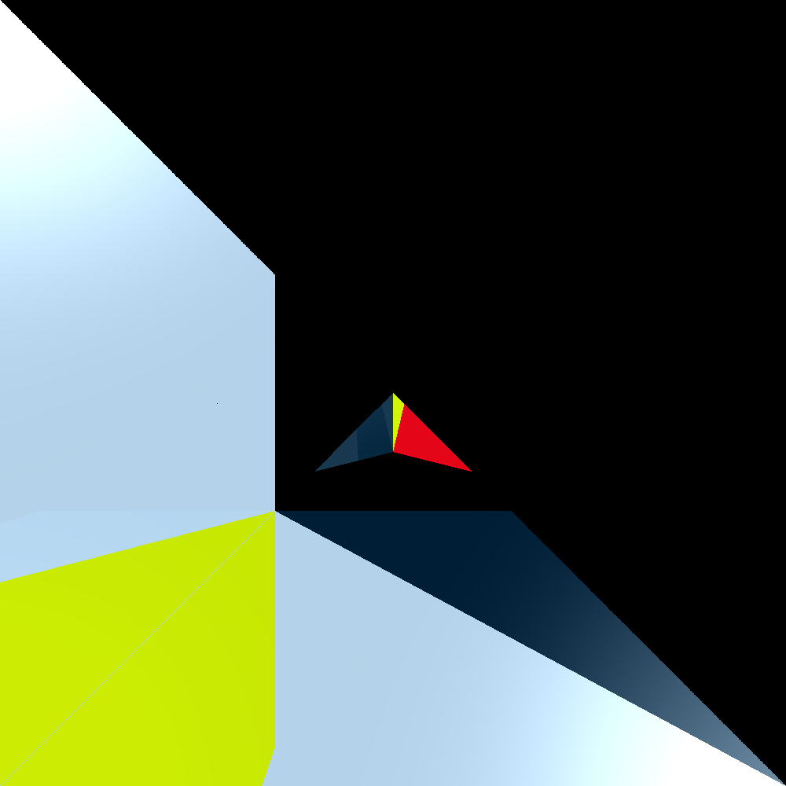
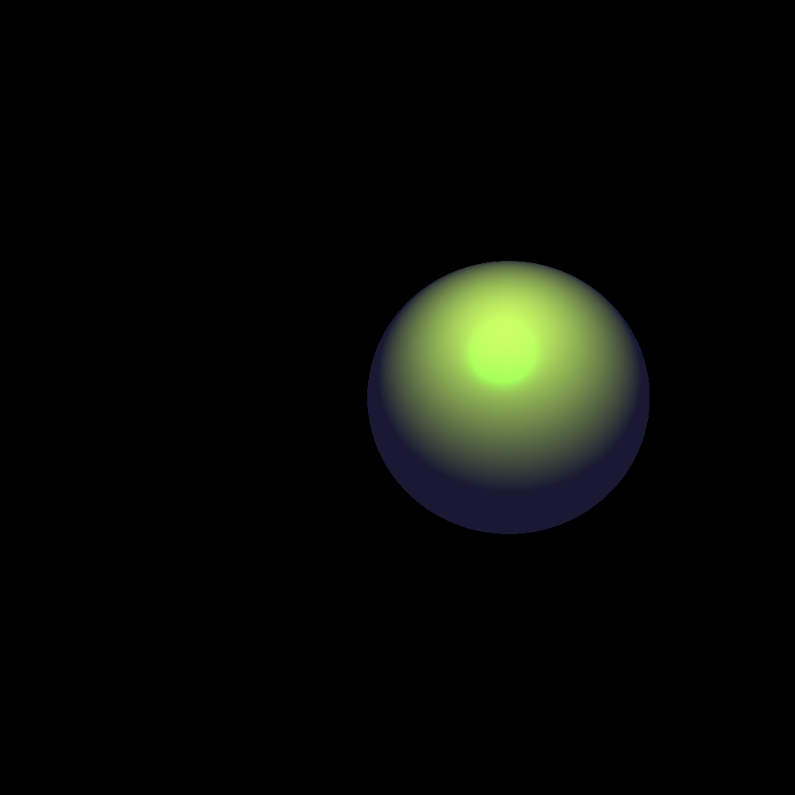
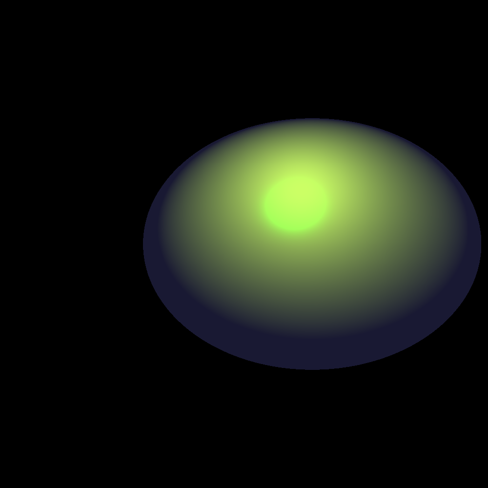
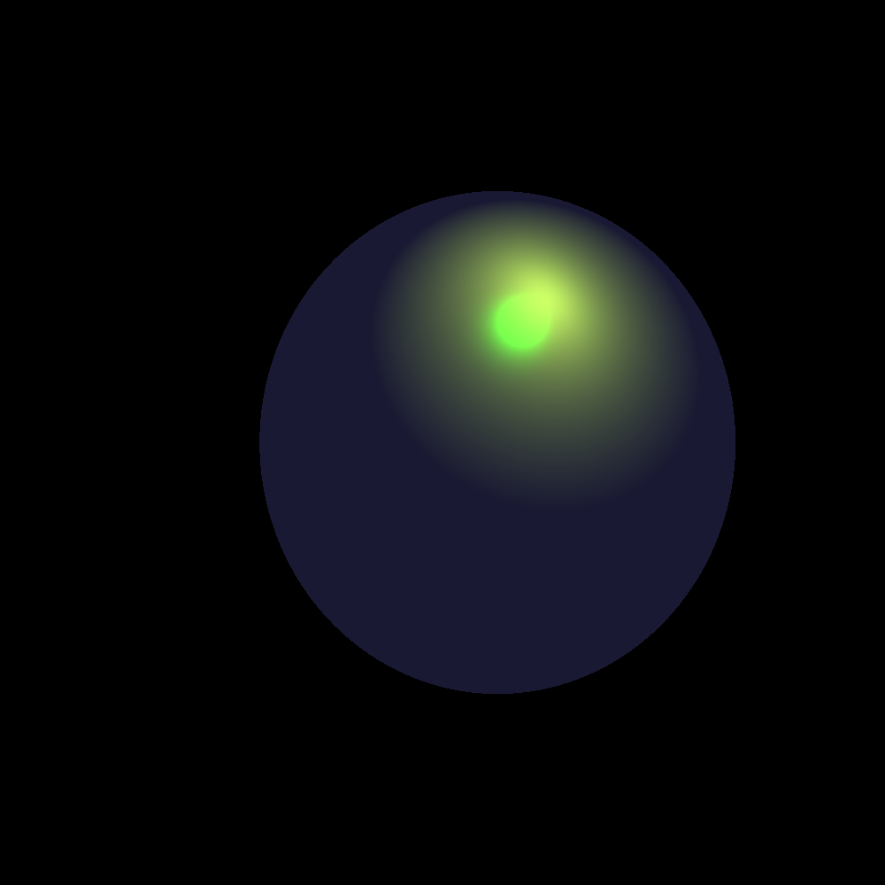
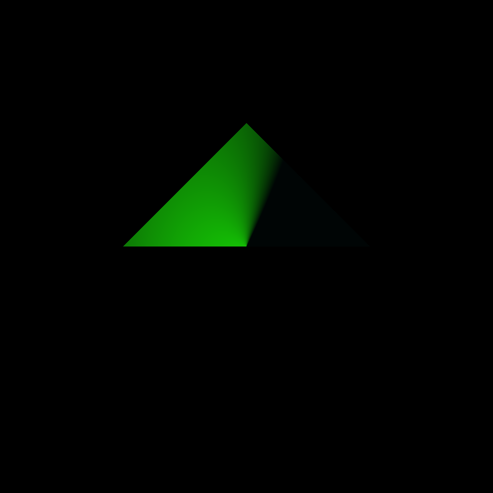

Demonstrates an implementation of global illumination and related concepts with ray tracing.
Link to CodeCommand Line: ./raytracer input input-01.scn write_img image-01 Run-time: less than 3s Features demonstrated: -ambient lighting -point lighting -spherical phong shading
notes-01.txt input-01.scn Command Line: ./raytracer input input-02.scn write_img image-02 Run-time: less than 3s Features demonstrated: -ambient lighting -directional lighting -spherical phong shading
notes-02.txt input-02.scn Command Line: ./raytracer input input-03.scn write_img image-03 Run-time: less than 9s Features demonstrated: -shadows -point lighting -ambient lighting -spherical phong shading
notes-03.txt input-03.scn
Command Line: ./raytracer input input-04.scn write_img image-04 Run-time: less than 7s Features demonstrated: -shadows -reflections -triangles -directional lighting -ambient lighting -phong shading
notes-04.txt input-04.scn Command Line: ./raytracer input input-05.scn write_img image-05 Run-time: less than 10s Features demonstrated: -reflections -translations -obj triangles (both front and back sides) -directional lighting -ambient lighting -phong shading
notes-05.txt input-05.scn input-05.obj Command Line: ./raytracer input input-06.scn write_img image-06 Run-time: less than 3s Features demonstrated: -translation -point lighting -phong shading
notes-06.txt input-06.scn Command Line: ./raytracer input input-07.scn write_img image-07 Run-time: less than 3s Features demonstrated: -translation -scaling -point lighting -phong shading
notes-07.txt input-07.scn Command Line: ./raytracer input input-08.scn write_img image-08 Run-time: less than 3s Features demonstrated: -translation -scaling -rotations -point lighting -phong shading
notes-08.txt input-08.scn Command Line: ./raytracer input input-09.scn write_img image-09 Run-Time: less than 3s Features Demonstrated: -obj triangles with different normals for each vertex -normal interpolation -point lighting -ambient lighting
notes-09.txt input-09.scn input-09.obj 